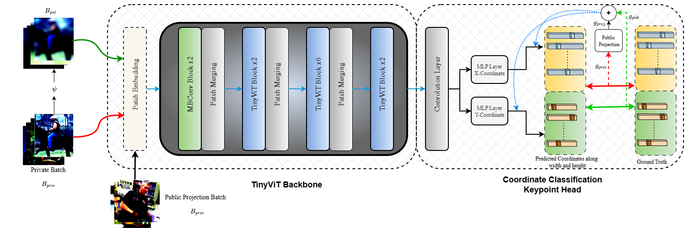

Abstract
Human pose estimation (HPE) underpins critical applications in healthcare, activity recognition, and human–computer interaction. However, the privacy implications of processing sensitive visual data present significant deployment barriers in critical domains. Differential Privacy (DP) provides formal guarantees but often results in steep performance costs. We introduce the first unified framework for differentially private 2D Human Pose Estimation (2D-HPE) that achieves strong privacy-utility trade-offs for structured visual prediction through complementary noise mitigation mechanisms. Our Feature-Projective DP integrates: (1) subspace projection that reduces noise variance by a factor k/p by restricting gradient updates to a k-principal subspace within the full p-dimensional parameter space, and (2) feature-level privacy, which selectively privatizes sensitive features while retaining public visual cues. Together these mechanisms yield a multiplicative utility gain under formal privacy constraints. Extensive experiments on MPII and HumanART datasets across privacy budgets (ε ∈ {0.2, 0.4, 0.6, 0.8}), clipping thresholds (C ∈ {0.01, 0.1, 1.0}) and training strategies demonstrate consistent improvements over vanilla DP-SGD. At ε = 0.8, our method achieves 82.61% PCKh@0.5, recovering 73% of the privacy-induced performance gap. Cross-dataset evaluation on the HumanART confirms generalization (51.60 AP). Our study provides the first rigorous benchmark and a practical blueprint for privacy-preserving pose estimation in sensitive, real-world applications

Architecture.
Presentation
Results & Analysis
.png)
Overview
Overview of our research contributions.

Quantitative Results on MPII
Quantitative Results.

Qualitative Results
Qualitative Results.
Poster
TBABibTeX
@article{sivangi2025differentially,
title={Differentially private 2D human pose estimation},
author={Sivangi, Kaushik Bhargav and Henderson, Paul and Deligianni, Fani},
journal={arXiv preprint arXiv:2504.10190},
year={2025}
}